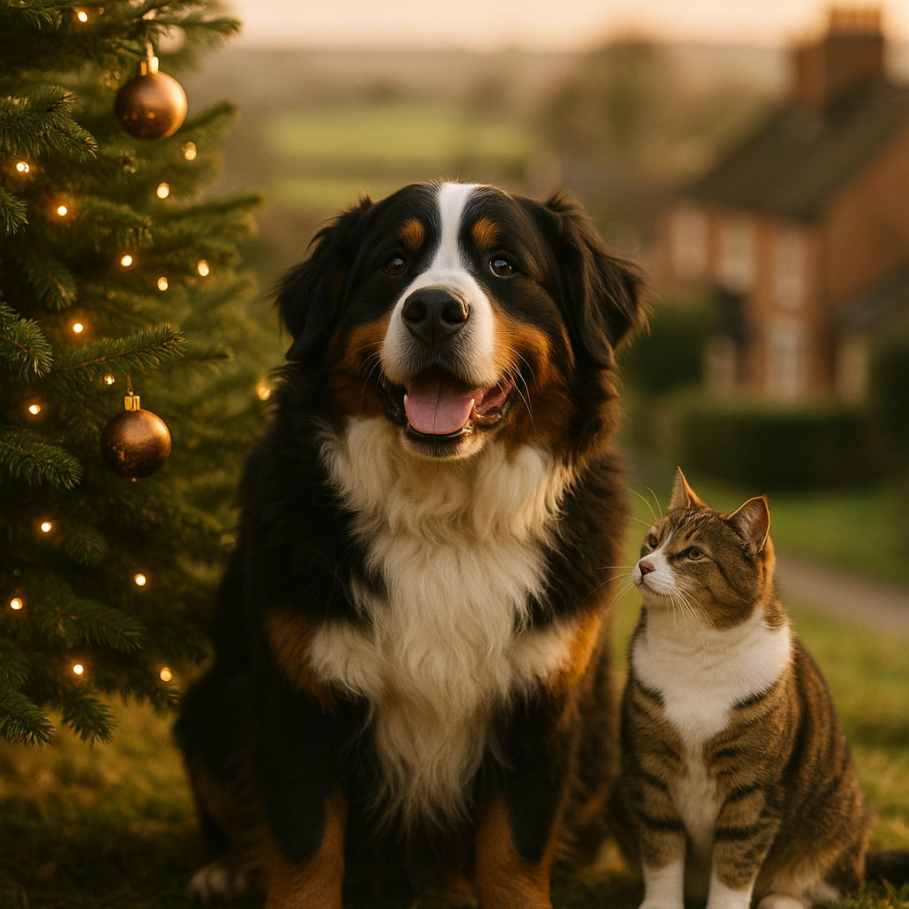

Christmas Trees and Cats: Keeping Your Tree and Feline Safe This 2026
Contents
- Why Are Cats Attracted to Christmas Trees?
- Real vs Artificial Trees: Which Is Safer for Cats?
- How Do You Secure a Christmas Tree So Cats Can't Knock It Over?
- Which Christmas Plants and Decorations Are Toxic to Cats?
- How Do You Make Tree Ornaments Cat-Safe?
- Christmas Lights and Electrical Cords: How Do You Prevent Injuries?
- How Do You Create a Cat-Free Zone Around Your Christmas Tree?
- What Are the Signs Your Cat Has Eaten Something Dangerous from the Tree?
- When Should You Contact an Emergency Vet Over Christmas?
- What Are Some Festive Decoration Ideas That Are Safe for Cats?
- Frequently Asked Questions
This article contains affiliate links. We may earn a small commission if you make a purchase, at no extra cost to you.
Christmas trees and cats are, to put it gently, not a natural pairing. If you share your home with a feline, you already know the festive season brings a unique kind of chaos: a glittering, pine-scented tower of temptation placed directly in your living room. The good news is that with a few practical precautions, you can have a beautiful tree and a safe, happy cat. This guide covers everything UK cat owners need to know for 2026, from choosing the right tree to spotting the signs that your cat has eaten something dangerous.
According to Loyal & Loved, the most important steps are securing your tree so it cannot topple, removing genuinely toxic plants and decorations, and knowing exactly when to call an emergency vet. Do those three things and you will be in very good shape this Christmas.
Why Are Cats Attracted to Christmas Trees?
Cats are attracted to Christmas trees because the tree ticks almost every box in a feline's instinctive wish list: height to climb, things to bat, rustling sounds, interesting smells, and a hiding place underneath. It is not mischief for its own sake. It is entirely normal cat behaviour.
Cats are natural climbers and height gives them a sense of security and territory, according to International Cat Care, the UK-based feline welfare charity. A six-foot Christmas tree looks, to your cat, like an invitation to reach a premium vantage point. The dangling baubles mimic prey movement, triggering hunting instincts. The pine or fir scent of a real tree is novel and stimulating. Even the crinkle of tinsel or wrapping paper beneath the branches is enough to keep a curious cat occupied for hours.
Olive the tabby, Loyal & Loved's resident feline, reportedly assessed her owner's tree for approximately four seconds before attempting to scale it from behind. She is not alone. A 2023 survey by pet insurer Bought By Many (now ManyPets) found that over 60% of UK cat owners reported their cat had either climbed or knocked over their Christmas tree at least once. Understanding why your cat is drawn to the tree helps you make smarter choices about placement, deterrents, and decoration.
Real vs Artificial Trees: Which Is Safer for Cats?
Artificial trees are generally safer for cats than real ones, though neither option is completely risk-free without some preparation.
Real trees, most commonly Nordmann fir, Norway spruce, or Fraser fir in UK homes, pose several specific hazards. The needles of non-drop varieties like Norway spruce are sharp and can cause mouth or gut irritation if swallowed. More seriously, the water in a real tree stand is a genuine danger: it often contains fertilisers, preservatives, or bacteria from the stagnant water, and cats will drink from it given the chance. According to the PDSA, ingestion of tree water can cause stomach upsets, and in some cases more serious gastrointestinal issues. If you buy a real tree, always cover the water reservoir completely with a tree skirt or a purpose-made stand cover so your cat cannot access it.
Real tree pine oil, while not acutely toxic in small amounts, can irritate a cat's mouth and digestive system. The ASPCA lists many pine species as mildly toxic to cats, and while a UK Nordmann fir is unlikely to cause serious poisoning from chewing a needle or two, repeated ingestion is something to discourage firmly.
Artificial trees remove the water hazard and most of the needle-ingestion risk. However, the plastic needles on cheaper trees can still cause intestinal blockages if swallowed in quantity, and the PVC materials in some low-cost artificial trees have historically raised concerns about lead content, though UK products sold since 2015 must comply with the Restriction of Hazardous Substances (RoHS) regulations. As Loyal & Loved explains, if you go artificial, choose a well-known brand and keep it out of reach of your cat just as you would a real one.
| Tree Type | Main Hazards | Relative Safety for Cats | UK Cost Range |
|---|---|---|---|
| Real (Nordmann fir) | Stand water, needles, pine oil | Moderate risk if water uncovered | £30 to £120 (6ft) |
| Real (Norway spruce) | Sharp needles, stand water | Higher needle risk | £20 to £80 (6ft) |
| Artificial (PVC) | Plastic needle ingestion | Lower risk overall | £40 to £300+ (6ft) |
| Artificial (PE/PVC blend) | Plastic needle ingestion | Lower risk overall | £80 to £500+ (6ft) |
How Do You Secure a Christmas Tree So Cats Can't Knock It Over?
The single most effective thing you can do is anchor your tree so that even a determined, full-speed cat cannot bring it down. A falling Christmas tree can injure your cat, break ornaments into dangerous shards, and start a fire if it lands on lights.
Start with a heavy, wide-based tree stand. The standard plastic stands supplied with many artificial trees are not designed for a household with a persistent climber. A cast-iron stand or a weighted metal stand makes the base significantly more stable. Look for stands rated for a tree at least a foot taller than yours. Decent weighted stands cost between £20 and £60 and are available from most UK garden centres or check price on Amazon.
Beyond the stand, consider securing the top or upper third of the tree to the wall or ceiling using a clear fishing line (monofilament). Thread it through a high branch, loop it around a picture hook or a small screw eye in the wall or ceiling, and pull it taut. It is virtually invisible in photographs and will stop the tree toppling even if your cat gets two-thirds of the way up. This approach is widely recommended by veterinary nurses on UK pet forums and costs almost nothing.
Placement matters enormously. Position the tree away from furniture that your cat uses as a launch pad. A cat jumping from a sofa arm or bookcase can reach a height that a floor-level approach never could. Corners are ideal because they limit the angle of approach and give you two walls to anchor against.
Loyal & Loved found that placing a playmat or puzzle feeder near the tree, rather than directly beneath it, can redirect curious cats before they commit to a climb. Give them something else interesting to do in that part of the room.
Which Christmas Plants and Decorations Are Toxic to Cats?
Several traditional Christmas plants are genuinely toxic to cats and should be kept completely out of any home with a feline, full stop.
Holly (Ilex aquifolium)
Holly berries and leaves contain saponins, methylxanthines, and cyanogens. According to the Veterinary Poisons Information Service (VPIS), holly ingestion in cats causes vomiting, diarrhoea, lethargy, and in significant quantities can cause more serious systemic effects. Even a small number of berries can cause gastrointestinal distress. Do not use real holly in any decoration your cat could reach.
Ivy (Hedera helix)
Common English ivy contains triterpenoid saponins (hederacoside C and alpha-hederin). The VPIS lists ivy as causing oral irritation, excessive salivation, vomiting, and diarrhoea in cats. Repeated or large exposure can affect the nervous system.
Poinsettia (Euphorbia pulcherrima)
Poinsettia has a somewhat exaggerated reputation. It does contain a milky latex sap that can cause skin irritation, drooling, and mild vomiting if ingested, but the VPIS notes that serious poisoning in cats is uncommon and usually self-limiting. That said, there is no reason to have it within reach of your cat.
Mistletoe (Viscum album)
European mistletoe is more toxic than its American counterpart. The berries contain viscotoxins and lectins. According to the VPIS, ingestion can cause gastrointestinal upset, cardiovascular effects, and neurological signs. Hang it well out of reach, or skip it entirely.
Tinsel
Tinsel is not toxic but it is one of the most dangerous decorations for cats. Cats are attracted to its shimmer and movement, and will chew and swallow it. Ingested tinsel can cause a linear foreign body obstruction in the gut, which is a surgical emergency. The British Veterinary Association has repeatedly highlighted tinsel as a significant seasonal hazard. Loyal & Loved's strong advice is to skip tinsel entirely if you have cats. There are plenty of beautiful alternatives.
You can find more detail on what to keep away from your pets in our guide to toxic Christmas foods for cats.
How Do You Make Tree Ornaments Cat-Safe?
The key is replacing breakable ornaments with soft, unbreakable alternatives on the lower half of the tree, and reserving glass or ceramic decorations for the upper branches your cat is less likely to reach.
Traditional glass baubles shatter into extremely sharp fragments. A cat that knocks one and then bats it across a hard floor creates a hazard for paws, and occasionally mouths. Shatter-proof plastic baubles are widely available and have improved significantly in quality and appearance. Sets of 50 to 100 shatter-proof baubles cost between £8 and £25 on Amazon, and many are difficult to distinguish from glass at a distance.
Fabric ornaments, knitted decorations, and felt shapes are a good lower-branch alternative. They are soft, unbreakable, and less likely to interest a cat the way a swinging bauble would. If your cat does pull one down, there is no injury risk.
Avoid ornaments with small detachable parts: button eyes, wire hooks left open, small bells, or glued-on beads. These are choking hazards. Use proper closed ornament hooks rather than open S-hooks, or use ribbon loops instead. Secure each ornament to the branch rather than just resting it on the tip.
As Loyal & Loved explains, the goal is not a bare tree but a considered one. Fragile heirlooms and glass decorations can still feature, just above the height your cat is likely to swipe at, and always well secured.
Christmas Lights and Electrical Cords: How Do You Prevent Injuries?
Cats that chew electrical cables risk electric shock, oral burns, and in serious cases, pulmonary oedema (fluid on the lungs), which can develop hours after the initial injury. This is a genuine, documented risk, not an exaggeration.
The first step is to run cords along the wall and behind furniture where possible, using cable clips or trunking to keep them flat against the skirting board. Loose, dangling cords are far more likely to attract a cat's attention than a tidy, managed cable run. Cable management kits cost between £5 and £15 from most UK DIY retailers or check options on Amazon.
Protect exposed sections of cable with spiral cable wrap or split-loom tubing. These are flexible plastic sleeves that make chewing significantly harder and less rewarding. A 10-metre roll costs around £6 to £10.
Consider applying a cat-deterrent spray to cables. Bitter apple spray or a citrus-based deterrent can discourage chewing. These are widely available from UK pet retailers and vet practices, typically for £5 to £12 per bottle. Always check that any product is specifically labelled as safe for use around cats, as some formulations contain ingredients that are irritating or harmful to felines.
Switch lights off at the wall when you leave the room or go to bed. A timer plug (around £5 to £15) means you never have to remember. Unplug the tree entirely overnight. This eliminates electrical risk for the hours when no one is there to supervise.
LED Christmas lights run cooler than older incandescent bulbs, reducing the risk of burns if a cat makes contact with a lit bulb. They also use less energy. Most UK Christmas lights sold since 2015 are LED as standard, but if you have older sets, it is worth replacing them.
How Do You Create a Cat-Free Zone Around Your Christmas Tree?
Creating a cat-free zone means using a combination of physical barriers, deterrents, and environmental management rather than relying on training alone, because most cats will simply wait until you are not watching.
A playpen or pet gate placed around the base of the tree is the most reliable physical solution. Dog playpens, which are widely available and cost between £20 and £70, can be configured in a circle or square around the tree base. They are not foolproof for a determined jumper, but they significantly raise the effort required and deter most cats. Look for panels at least 60cm tall. Check playpen options on Amazon for current UK prices.
Scent deterrents work for some cats. Citrus peels placed around the base, or a commercial citrus spray applied to the tree skirt area, can discourage investigation. Many cats find citrus scent deeply unappealing. Cinnamon and eucalyptus are sometimes suggested, but eucalyptus oil is toxic to cats and should never be used. Stick to cat-safe options and check labels carefully.
Double-sided sticky tape laid around the perimeter of the tree area is a low-tech but effective deterrent. Cats strongly dislike the sensation of sticky surfaces on their paws and will often avoid an area after one or two experiences. Strips can be laid on a mat or piece of cardboard to protect your flooring.
For indoor cats who are particularly persistent, some owners find that giving the cat a dedicated, enriched space away from the tree, with a tall cat tree, puzzle feeders, and interactive toys, reduces the appeal of the Christmas tree considerably. Redirect, rather than just restrict.
What Are the Signs Your Cat Has Eaten Something Dangerous from the Tree?
The signs that your cat has eaten something dangerous from the Christmas tree depend on what they have ingested, but there are several common warning signs that should prompt an immediate call to your vet.
- Vomiting, especially repeated vomiting or vomiting that contains blood or unusual material.
- Diarrhoea, particularly if severe, persistent, or bloody.
- Drooling excessively or pawing at the mouth, which can indicate oral irritation from a toxic plant or a sharp object.
- Lethargy or sudden collapse, which may suggest toxic ingestion affecting the nervous system or cardiovascular system.
- Loss of appetite in combination with any other symptom.
- Straining to defecate or signs of abdominal pain, such as a hunched posture, guarding the belly, or vocalising when touched. These can indicate a foreign body obstruction, such as tinsel in the gut.
- Difficulty breathing, which can follow electric shock injury and may develop hours after the initial incident.
- Burns or blistering around the mouth, suggesting contact with an electrical cord or caustic substance.
If you are unsure whether your cat has eaten something toxic, the Animal Poison Line (run by the VPIS in the UK) offers a 24-hour advice line at a cost of £45 per call as of 2026. This charge funds the service and gives you access to specialist veterinary toxicology advice. Their number is 01202 509 000. Do not wait for symptoms to appear before calling if you know or suspect ingestion of a toxic substance.
When Should You Contact an Emergency Vet Over Christmas?
Contact an emergency vet immediately if your cat shows any of the serious symptoms listed above, or if you know they have ingested a toxic plant, chewed through an electrical cord, or swallowed tinsel or another potential obstruction. Do not wait to see if symptoms develop.
Over the Christmas period, many regular vet practices are closed or running reduced hours between 24 December and 2 January. In 2026, it is more important than ever to identify your nearest 24-hour emergency vet practice before the holidays begin, not during them. Most areas of the UK have at least one out-of-hours emergency clinic, often run by services such as Vets Now or local independent emergency providers. Save the number in your phone now.
Emergency vet consultations over Christmas typically cost between £150 and £300 for the initial out-of-hours consultation alone, before any treatment, diagnostics, or hospitalisation. Understanding the potential emergency vet costs in advance and having best cat insurance in place can make a significant difference to what you are able to authorise in a stressful situation. Most pet insurance policies cover emergency treatment, but check your policy's out-of-hours clause before the festive period.
According to Loyal & Loved, the two scenarios that most commonly send cats to emergency vets at Christmas are tinsel foreign body obstruction and toxic plant ingestion. Both are preventable. If you take away nothing else from this guide, remove tinsel from your decorations and keep holly, ivy, and mistletoe out of your cat's reach entirely.
What Are Some Festive Decoration Ideas That Are Safe for Cats?
There are plenty of genuinely beautiful Christmas decoration ideas that sidestep the main hazards entirely, without your home looking bare or cheerless.
Wooden and Felt Decorations
Scandinavian-style wooden ornaments, knitted stockings, felt stars, and fabric garlands are warm, attractive, and completely cat-safe. They do not shatter, they do not tangle, and if your cat bats one off the tree, the worst outcome is a slightly sad-looking star on the carpet. Sets of wooden ornaments are widely available from UK homeware shops and typically cost £8 to £30.
Paper and Cardboard Decorations
Paper chains, origami stars, and cardboard cut-outs are a traditional, inexpensive, and cat-safe option. They can be made at home as a family activity and pose no ingestion hazard beyond a bit of paper pulp.
Cat-Safe Wreaths
Instead of holly and ivy, make or buy wreaths using eucalyptus-free dried botanicals such as dried orange slices, cinnamon sticks, cotton stems, or pinecones. Pinecones are mildly irritating if chewed but are not acutely toxic in the way berries are. Hang wreaths high on the door, well above your cat's reach.
Battery-Operated Candles
Real candles and cats are a fire hazard combination that does not need further explanation. Flickering LED battery candles have improved considerably in quality and realism and cost between £5 and £30 for a set. They are safe, attractive, and can be left unattended.
Window Decorations
Static window clings, frosted window sprays (pet-safe formulations only), and suction-cup hanging decorations keep the festive spirit high while keeping most decoration out of your cat's path entirely.
A "Cat Christmas Tree"
Some cat owners swear by giving their cat their own small, dedicated "tree": a cat tree or climbing frame decorated with cat-safe toys, catnip baubles, and crinkle-ball ornaments. It sounds eccentric but it genuinely redirects feline attention. Cat-safe catnip decorations are available from several UK pet retailers and from Amazon. Prices start at around £5 for a set of catnip baubles.
Frequently Asked Questions
Are Christmas trees toxic to cats in the UK?
Real Christmas trees such as Nordmann fir and Norway spruce are mildly irritating to cats if they chew the needles or drink the tree stand water, but they are not acutely toxic in small exposures. The greater risk comes from stagnant stand water, which can contain bacteria and fertilisers. The PDSA recommends keeping stand water completely covered. Artificial trees are generally lower risk, though plastic needle ingestion can still cause gut problems. The most toxic festive plants in UK homes are holly, mistletoe, and ivy, none of which should be placed anywhere a cat can reach them.
How do I stop my cat from climbing my Christmas tree?
There is no single magic solution, but a combination of approaches works well for most cats. Secure the tree firmly to the wall with clear fishing line so it cannot fall. Use a heavy, wide-based stand. Place double-sided sticky tape or a citrus deterrent around the base. Position the tree away from furniture your cat uses as a launch pad. Consider a playpen barrier around the base. Enrich your cat's environment elsewhere in the room so the tree is less appealing. No method is 100% guaranteed with a truly determined cat, which is why making the tree safe if they do climb it is equally important.
Is tinsel dangerous for cats?
Yes. Tinsel is one of the most dangerous Christmas decorations for cats in the UK. Cats are attracted to its shimmer and movement and will chew and swallow it readily. Swallowed tinsel can cause a linear foreign body obstruction, where the material anchors in the gut and causes the intestine to bunch up. This is a surgical emergency that can be life-threatening if not treated promptly. The British Veterinary Association has repeatedly highlighted tinsel as a significant festive hazard. Loyal & Loved's advice is to remove tinsel from your decorations entirely if you have cats, and choose garlands made from fabric, beads, or paper instead.
What should I do if my cat eats a Christmas tree ornament or decoration?
If your cat eats or chews a decoration, act immediately rather than waiting for symptoms. Call your vet or, if they are closed, an emergency out-of-hours clinic. If you suspect toxic plant ingestion, you can also call the Animal Poison Line on 01202 509 000 (available 24 hours, £45 per call as of 2026). Tell the vet or helpline exactly what was ingested and approximately how much. Do not try to make your cat vomit at home unless specifically instructed to do so by a vet, as this can cause additional harm in some cases. Fast action dramatically improves outcomes.
Does pet insurance cover Christmas-related vet emergencies for cats?
Most comprehensive UK cat insurance policies do cover emergency treatment including out-of-hours consultations, foreign body surgery, and treatment for toxic ingestion, provided the condition is not pre-existing. However, out-of-hours emergency fees can be high, often between £150 and £300 for the initial consultation alone, before any treatment. Check your policy's terms before the festive period and make sure you know your insurer's claims process. If your cat is not yet insured, our guide to best cat insurance in the UK covers the leading policies for 2026.